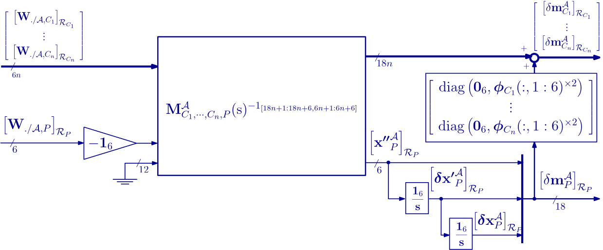
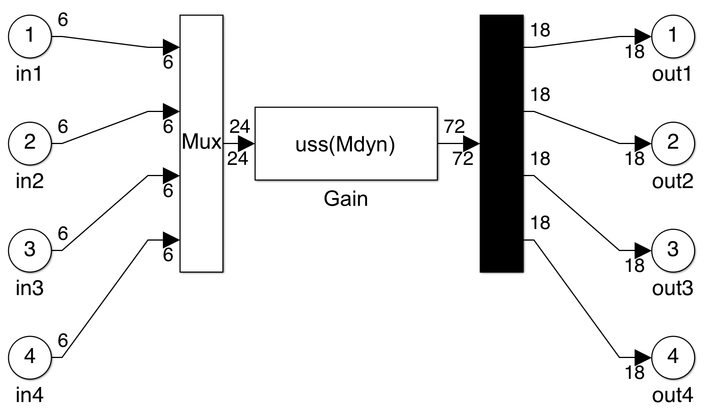

N ports flexible body
NINOP model of a flexible body from $\mathbf M$, $\mathbf K$, $\mathbf D$ and $\boldsymbol \Phi$ matrices
This block computes the $(18n+6) \times (6n+18)$ linear dynamic model of a flexible body $\mathcal{A}$ from the masss, stiffness, damping and projection matrices of the body clamped at the point $P$. The $n+1$ ports of this model are:
- the $n$ ports at points $C_i$ (for $i=1,\dots,n$), i.e.: the $n$ $18\times 6$ channels from the wrenches applied to the body at points $C_i$ by the child substructures to the motion vectors of points $C_i$,
- the port at point $P$, i.e.: the $6\times 18$ channel from the motion vector of point $P$ to the wrench applied by the body to the parent substructure at point $P$.
Assumptions:
- $\mathbf M$, $\mathbf K$ and $\mathbf D$ are $(6+n_f)\times(6+n_f)$ mass, stiffness and damping matrices where $n_f$ is the number of flexible modes and have the following structures: $$\mathbf{M} =\left[\begin{array}{cc}\mathbf{D}_P^{\mathcal A} & \mathbf{L}_P^T\\ \mathbf{L}_P & \mathbf{1}_{n_f} \end{array}\right]\;,\quad \mathbf{K} =\left[\begin{array}{cc}\mathbf{0}_{6\times 6} & \mathbf{0}_{6\times n_f} \\ \mathbf{0}_{n_f \times 6} & \mathrm{diag(\omega_i^2)} \end{array}\right]\;,\quad\mathbf{D} =\left[\begin{array}{cc}\mathbf{0}_{6\times 6} & \mathbf{0}_{6\times n_f} \\ \mathbf{0}_{n_f \times 6} & \mathrm{diag(2\xi_i\omega_i)} \end{array}\right]\;,\quad i=1,\cdots n_f\;.$$
- $\boldsymbol \Phi$, the projection matrix of the $n_f$ modal shapes at the point $P$ and $C_i$, is a $(6+n_f)\times(6(n+1))$ matrix with the following structure: $$ \boldsymbol{\Phi}=\left[\begin{array}{cccc} \boldsymbol{\phi}_{P}^T & \boldsymbol{\phi}_{C_1}^T & \cdots & \boldsymbol{\phi}_{C_n}^T \end{array}\right]\;\quad \mathrm{with}\quad \boldsymbol{\phi}_{P}=[\mathbf{1}_6\quad \mathbf{0}_{6\times n_f} ]\;.$$
A check box "Model reduction" can be used to perform a balanced reduction of the model.
The body $\mathcal{A}$ is modeled under the clamped at $P$ - free at $C_i\;(i=1,\cdots, n)$ boundary conditions.
A check-box "Free body at P" allows to free the model at the port $P$. Then the model is $18(n+1)\times 6(n+1)$ and includes $12$ integrators to model the $6$ rigid modes at the point $P$. The last $18\times 6$ channel corresponds to the channel from the wrench applied to the body at the point $P$ to the motion vector of the point $P$.
See also: General notations, Multi in/out-port flexible body, N-port NASTRAN body, multi-port flexible plate, multi-port FEM Kirchhoff plate, 1-port flexible body, TITOP model of a flexible beam, 1-port NASTRAN flexible body, Multi-Port_rigid_body
Contents
Description
$\mathcal R_P$, $\mathcal R_{C_i}$ are local body frames attached to the bodies connected to the body $\mathcal A$ at points $P$, $C_i$.Let us define:
- $\left[\mathbf{W}_{./\mathcal{A},C_i}\right]_{\mathcal{R}_{C_i}} $: the external wrench ($6\times 1$) applied to the body at point $C_i$, expressed in $\mathcal{R}_{C_i}$,
- $\left[\delta\mathbf{m}^{\mathcal A}_{C_i}\right]_{\mathcal{R}_{C_i}}$: the motion vector ($18\times 1$) of the body at point $C_i$, expressed in $\mathcal{R}_{C_i}$,
- $\left[\delta\mathbf{m}^{\mathcal A}_{P}\right]_{\mathcal{R}_P} $: the motion vector ($18\times 1$) of the body at point $P$, expressed in $\mathcal{R}_P$,
- $\left[\mathbf{W}_{\mathcal{A}/.,P}\right]_{\mathcal{R}_{P}}$: the wrench ($6\times 1$) applied by the body at point $P$, expressed in $\mathcal{R}_{P}$.
The dynamic model of the body $\mathcal A$, cantileverd at point $P$ is described by the generalized second order model: $$ \left[\begin{array}{cc}\mathbf{D}_P^{\mathcal A} & \mathbf{L}_P^T\\ \mathbf{L}_P & \mathbf{1}_{n_f} \end{array}\right] \left[\begin{array}{c} \left[\boldsymbol{ \mathbf{x''}}^{\mathcal A}_{P} \right]_{\mathcal{R}_P} \\ \ddot{\eta}_1 \\ \vdots \\ \ddot{\eta}_{n_f} \end{array}\right] + \left[\begin{array}{cc}\mathbf{0}_{6\times 6} & \mathbf{0}_{6\times n_f} \\ \mathbf{0}_{n_f \times 6} & \mathrm{diag(2\xi_i\omega_i)} \end{array}\right] \left[\begin{array}{c} \left[\delta\boldsymbol{ \mathbf{x'}}^{\mathcal A}_{P} \right]_{\mathcal{R}_P} \\ \dot{\eta}_1 \\ \vdots \\ \dot{\eta}_{n_f} \end{array}\right] + \left[\begin{array}{cc}\mathbf{0}_{6\times 6} & \mathbf{0}_{6\times n_f} \\ \mathbf{0}_{n_f \times 6} & \mathrm{diag(\omega_i^2)} \end{array}\right] \left[\begin{array}{c} \left[\delta\boldsymbol{ \mathbf{x}}^{\mathcal A}_{P} \right]_{\mathcal{R}_P} \\ \eta_1 \\ \vdots \\ \eta_{n_f} \end{array}\right] =\left[\begin{array}{cccc} \boldsymbol{\phi}_{P}^T & \boldsymbol{\phi}_{C_1}^T & \cdots & \boldsymbol{\phi}_{C_n}^T \end{array}\right] \left[\begin{array}{c} \left[\mathbf{W}_{./\mathcal{A},P}\right]_{\mathcal{R}_{P}} \\ \left[\mathbf{W}_{./\mathcal{A},C_1}\right]_{\mathcal{R}_{C_1}} \\ \vdots \\ \left[\mathbf{W}_{./\mathcal{A},C_n}\right]_{\mathcal{R}_{C_n}} \end{array}\right] \;. $$ and the output equation: $$ \left[\begin{array}{c} \left[\ddot{\mathbf{x}}_P\right]_{\mathcal{R}_{P}} \\ \left[\ddot{\mathbf{x}}_{C_1}\right]_{\mathcal{R}_{C_1}} \\ \vdots \\ \left[\ddot{\mathbf{x}}_{C_{n}}\right]_{\mathcal{R}_{C_{n}}} \end{array}\right] =\left[\begin{array}{c} \boldsymbol{\phi}_{P} \\ \boldsymbol{\phi}_{C_1} \\ \vdots \\ \boldsymbol{\phi}_{C_{n}} \end{array}\right] \left[\begin{array}{c} \left[\ddot{\mathbf{x}}_{P}\right]_{\mathcal{R}_{P}} \\ \ddot{\eta}_1 \\ \vdots \\ \ddot{\eta}_{n_f} \end{array}\right] $$ where $\eta_i$ are the flexible modal coordinates, $\delta\mathbf m^\mathcal{A}_P=\left[{\boldsymbol{\mathbf{x}''}^\mathcal{A}_P}^T\;\;{\delta\boldsymbol{\mathbf x'}^\mathcal{A}_P}^T\;\;{\delta\mathbf{x}^\mathcal{A}_P}^T\right]^T$ (in any projection frame) and $\mathbf{W}_{./\mathcal{A},P}=-\mathbf{W}_{\mathcal{A}/.,P}$.
The NINOP model $\mathbf{M}^{\mathcal{A}}_{C_1,\dots,C_n,P}(\mathrm{s})$ of the flexible body is then described by the following block diagram:
If the check box "Free body at P" is selected, then: let us denote $\mathbf M^{\mathcal A}_{C_1,\cdots,C_n,P}(\mathrm s)(18n+1:18n+6,6n+1:6n+6)$ the transfer from $\left[\boldsymbol{ \mathbf{x''}}^{\mathcal A}_{P} \right]_{\mathcal{R}_P}$ (the $6$ components acceleration dual vector at the point $P$) to $\left[ \mathbf{W}_{\mathcal{A}/.,P} \right]_{\mathcal{R}_P}$ (the $6$ components wrench). This chanel is then inverted and $12$ integrators are added according to following Figure to output the motion vector $\left[ \delta\mathbf{m}^{\mathcal A}_{P} \right]_{\mathcal{R}_P}$ of the body $\mathcal A$ at the point $P$.

$\mathbf G(\mathrm s)^{-1_{[I,J]}}$ denotes the system $\mathbf(\mathrm s)$ where the channel from the inputs numbered in $I$ to the outputs numbered in $J$ is inverted (the vector of indices $I$ and $J$ must have the same length).
The model $\mathbf{M}^{\mathcal{A}}_{C_1,\dots,C_n,P}(\mathrm{s})$ can be reduced to the order $2n_r$ by a balanced reduction where $n_r$ (intreger between $0$ and $n_f$) is the number of flexible modes retained in the reduced-order model.
Ports
Inputs:
- W./body,Ci $=\left[\mathbf{W}_{./\mathcal{A},C_i}\right]_{\mathcal{R}_{C_i}} $: 6 component signal (units: $N$ and $N.m$),
- m_P $=\left[\delta\mathbf{m}^{\mathcal A}_{P}\right]_{\mathcal{R}_P}$: 18 component signal (units: $m/s^2$, $rd/s^2$, $m/s$, $rd/s$, $m$, $rd$)
or, if "Free body at P" is selected, W./body,P $=\left[\mathbf{W}_{./\mathcal{A},P}\right]_{\mathcal{R}_P}$: 6 component signal (units: $N$ and $N.m$).
Outputs:
- m_Ci $=\left[\delta\mathbf{m}^{\mathcal A}_{C_i}\right]_{\mathcal{R}_{C_i}}$: 6 component signal (units: $m/s^2$, $rd/s^2$, $m/s$, $rd/s$, $m$, $rd$),
- Wbody/.,P $=\left[\mathbf{W}_{\mathcal{A}/.,P}\right]_{\mathcal{R}_P}$: 6 component signal (units: $N$ and $N.m$)
or, if "Free body at P" is selected, m_P $=\left[\delta\mathbf{m}^{\mathcal A}_{P}\right]_{\mathcal{R}_P}$: 18 component signal (units: $m/s^2$, $rd/s^2$, $m/s$, $rd/s$, $m$, $rd$).
Parameters
- the mass matrix: $\mathbf M$,
- the stiffness matrix: $\mathbf K$,
- the damping matrix: $\mathbf D$,
- the projection matrix: $\boldsymbol\Phi$,
- a check box (reduction) to reduce the order of the model to $2n_r$ where $n_r$ can be specified in the dialog box,
A check box "Free body at P".
Simulink diagram under the mask
The Simulink block is built by the initialization according to the parameters in the dialog box. Examples:
or, if "Free body at P" is selected:
